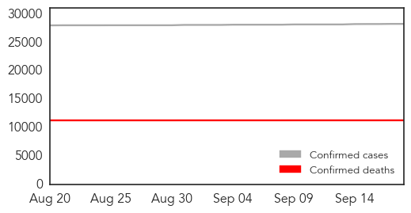

30 Day Trends
Web: 0 alerts, 0 warnings
Twitter: 0 alerts, 0 warnings
7 new deaths (11293 total)
263 new cases (28245 total)
Top Articles:
- 1.000
- Amid institutional Ebola blunders, Georgia did everything right
- 1.000
- Latest News on Ebola and Infectious Diseases
- 0.999
- Monitoring Ends for Travelers from Liberia for Ebola
- 0.998
- West African health infrastructure gets United States support
- 0.995
- First Italian with Ebola takes trial drug
- 0.995
- ‘America’s Nobel’ Goes To Doctors Without Borders « Israel Grossman Article.Org
- 0.994
- Travelers from Liberia No Longer Screened for Ebola
- 0.992
- Doctors Without Borders Has Mixed Feelings About Award For Ebola Work
- 0.990
- More Needs to Be Done in Fighting Malaria, CDC Chief Says
- 0.990
- Airport screening to end for travelers from Liberia to U.S.
- 0.988
- Study shows fear and stigma are major factors that contribute to spread of AIDS, Ebola
- 0.985
- People worked to tackle Ebola marched to UK parliament in honour
- 0.981
- How can Sierra Leone's health sector recover from Ebola?
- 0.977
- Lassa fever's York County victim: Much work remains for Lassa, Ebola researchers
- 0.976
- Breaking News and Opinion Mareeg.com
- 0.974
- We are still learning the full extent of the ebola catastrophe
- 0.968
- Ebola response leaves stronger health networks, experts say
- 0.962
- Lassa fever took its first U.S. victim in York County 46 years ago. Here is the family's untold story
- 0.953
- Legislature delays update on health law
- 0.943
- Australian Healthcare Workers Stuck In West Africa In Case They Contract Ebola
- 0.942
- Polio resurfaces in Mali from Ebola-hit Guinea - WHO
- 0.930
- NEWS ON AIR : News On AIR brings the Latest & Top Breaking News on Politics, G-20 summit, Cricket, Sports, Business , State,Formula One in INDIA , Regional Language Audio Bulletins , Regional Language
- 0.915
- Ebola: Entry screening for travelers entering the United States from Liberia to end Monday
- 0.895
- Pride of Reading awards: Ebola nurse up for Healthcare award
- 0.875
- Survivors and physicians share experiences of 2014 Nigerian Ebola outbreak
- 0.867
- Trials to show if ZMapp, Ebola vaccines work to start soon in West Africa
- 0.820
- Cuban health care draws worldwide praise peoplesworld
- 0.819
- Brawl in Japanese parliament over controversial security bill
- 0.808
- Arrested French jihadist ‘instructed’ to attack concert
- 0.808
- Deposed interim president under house arrest in Burkina Faso
- 0.793
- French PM urges Hungary to treat migrants ‘humanely’
- 0.788
- 93 Days in Nollywood, Articles
- 0.744
- Fund launched to seek cures for African diseases
- 0.618
- Trial Ebola drug takes step closer to market
- 0.562
- Osborne unveils £350m health labs investment
- 0.525
- Ebola protective suit honored in global design competition
Top Tweets:
- 0.926
- RT: Just reached 1500 Ebola virus genomes from many collaborators spanning epidemic. Firing up BEAST on quad Tesla K40 G…
- 0.882
- Ebola Virus Mutations May Help It Evade Drug Treatment - Science 2.0 http://t.co/BGvEFG8I3H ebola EVD
- 0.774
- In Sierra Leone Giving the Stigma of Ebola a Good Swift Kick - New York Times http://t.co/LBgYi0JoyK ebola EVD
- 0.727
- Ebola lesson 1:Every country needs core set of public health capacities to find stop prevent health threats when they emerge EyesonAfrica
- 0.664
- The US will stop Ebola entry screening for travelers from Liberia as of Monday. Hope Guinea & Sierra Leone can get there soon.
- 0.638
- Ebola lesson 2: When nat’l capacities are overwhelmed world must move immediately to combat emerging health threats. EyesonAfrica
- 0.626
- RT: Good to see leaders of Ebola outbreak in Liberia sharing their experiences cc https…
- 0.624
- Confusion and fear of Ebola delayed treatment for some kids - Fox News http://t.co/14jb6WHk7B ebola EVD
- 0.568
- Ebola contributed to tourism decline – Ramawela - Citizen http://t.co/R2AJ0axLlE ebola EVD
- 0.563
- RT: Nigeria showed what could happen in response to Ebola crisis effective and rapid use of health infrastructure - @DrFrie…
- 0.504
- While Guinea celebrates an Ebola-free week 5 cases flare up in Sierra Leone via http://t.co/5jpGRIMOEK
Web/News Articles

Tweets

Human Impact
Article Locations

Article Confidences